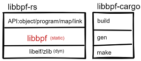
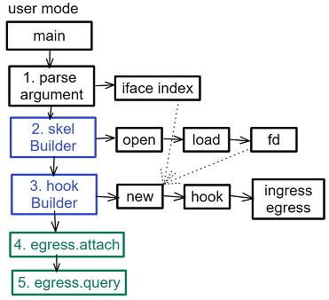
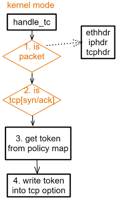

基于Rust和BPF技术的网络TCP水印
March 23, 2022 -网络水印用于防DDoS攻击和网络流量等安全领域，原理是给报文增加特征信息，基于TCP options的增加字段不会被防火墙等修改去除，本文正是使用BPF和Rust来达到高效的实现的具体描述。1 源码参见[] 保护知识产权的图片水印不在此列
- BPF驱动使用c开发
- 用户态的配置和加载器使用rust和libbpf-rs加速开发
依赖封装关系

基于libbpf-rs开发, libbpf-rs提供用于开发的API抽象，包括驱动object和其静态程序、通讯、挂载上程序的资源抽象
同时libbpf-sys封装了unsafe的libbpf和libelf、zlib，其中核心是基于内核的一部分libbpf，c开发的静态链接库。细节稠密的api，也加载并解析驱动elf文件使用的动态链接的libelf和zlib
基于libbpf-cargo脚手架生成工程目录，build命令调用gen和make完成
工程目录结构
由libbpf-cargo自动生成的骨架目录的代码
netoken\
src\
bpf\ //驱动
.output\ //脚手架自动生成
netoken.skel.rs //=>libbpf_rs
netoken.c ^
vmlinux.h |
main.rs //=>libbpf_rs |
build.rs //=>libbpf_cargo-+
Cargo.toml
libbpf-rs\
.git
libbpf-rs\
libbpf-cargo\
Cargo.toml中可配置依赖libbpf-xxx的具体位置
[dependencies]
libbpf-rs = { path = "../libbpf-rs/libbpf-rs" }
[build-dependencies]
libbpf-cargo = { path = "../libbpf-rs/libbpf-cargo" }
骨架代码生成流程
- 用户工程 build.rs->libbpf-cargo.rs SkeletonBuilder() .bpf.c => .output/.skel.rs
- 用户工程生成的*.skel.rs流程:
- obj: DATA [u8]
- SkelBuilder()->OpenSkel()->*Skel(), progs/maps/links
- build_skel_config()->ObjectSkeletonConfigBuilder::new(DATA)
- builder.name().map("").prog("handle_").build()
- libbpf-rs 提供用户常用工具
- object/skelton
- prog/map/link
- iter/print/query/util
- perf/ringbuf
- libbpf-cargo 提供cargo build时自动生成skel，gen/make
- 执行*.skel.rs流程
- TcSkelBuilder.open()->OpenTcSkel(obj, config)
- OpenTcSkel.load() >> bpf_object__load_skeleton(config)
- OpenTcSkel.load()->TcSkel(obj,config, Tclinks())
- OpenTcSkel.progs()->OpenTcProgs(obj)
- OpenTcSkel.maps()->OpenTcMaps()
- OpenTcSkel.data()->ffi::c_void()
- TcSkel.attach() >> bpf_object__attach_skeleton(config)
- TcSkel.links = TcLinks(handle_tc)
- libbpf.h typedef struct bpf_object_skeleton bos
- libbpf将内核bpf_xxx封装到3个struct和4个阶段phase的api，隐藏内核极多的细节
- error/print/open_opts/
- bpf_object_open_[buffer/mem/xattr]xxx
- bpf_object__load/__next/__set/pin/unpin
- bpf_[program/map/link]__set/load/fd/xxx;__attach_xxx
- bpf_map__[set/get/find_map]
- bpf_perf/kprob/uprobe/tracepoint/link_xdp/tc_hook
用户态加载流程

- 解析命令行参数中的网卡名，并获取其系统中的网卡号
- 使用生成的skelBuilder逐步获取驱动object的内存文件描述符fd
- 使用生成的hookBuilder创建并将自己hook在网络出入口egress/ingress。本程序只使用了egress
- egress加载到内核，开始执行
- 查询tc的egress上的信息
fn main() -> Result<()> {
// 命令行参数解析
let opts = Command::parse();
// 去掉系统的内存限制
bump_memlock_rlimit()?;
// 从Skel里获取信息，从opts里获取ifindex
let builder = netokenSkelBuilder::default();
let open = builder.open()?;
let skel = open.load()?;
let fd = skel.progs().handle_tc().fd();
let ifidx = nix::net::if_::if_nametoindex(opts.iface.as_str())? as i32;
let mut tc_builder = TcHookBuilder::new();
tc_builder
.fd(fd)
.ifindex(ifidx)
.replace(true)
.handle(1)
.priority(1);
// 挂载驱动到TC的egress接口上
let mut egress = tc_builder.hook(TC_EGRESS);
// 执行attach，驱动开始工作
if opts.attach {
if let Err(e) = egress.attach() {
bail!("failed to attach egress hook {}", e);
}
}
// 执行destory，销毁驱动
if opts.destroy {
if let Err(e) = egress.detach() {
println!("failed to detach egress hook {}", e);
}
if let Err(e) = egress.destroy() {
println!("failed to destroy {}", e);
}
}
// 执行query，查询执行驱动的id
match egress.query() {
Err(e) => println!("failed to find egress hook: {}", e),
Ok(prog_id) => println!("found egress hook prog_id: {}", prog_id),
}
// 执行监听perf，收到数据后进入handle_event，收到错误丢包进入handle_lost_events
let perf = PerfBufferBuilder::new(skel.maps_mut().events())
.sample_cb(handle_event)
.lost_cb(handle_lost_events)
.build()?;
// 100ms一次的轮询驱动，有事件后进入上面的event
loop {
perf.poll(Duration::from_millis(100))?;
}
Ok(())
}
类似于基于tc工具实现
$ tc qdisc add dev xxx
$ tc filter [add|change|replace] dev xxx
$ tc qdisc show dev xxx
驱动流程

- 检查入参struct __sk_buff是否是tcp报文，依次从2层解析判断到4层
- 检查tcp报文是否是握手syn包。syn包携带options用于连接双方协商功能
- 读取policy map，获得不同策略下的token
- 加入token这个option到syn包中
// 驱动入口，数据已由内核组装为__sk_buff
SEC("tc")
int handle_tc(struct __sk_buff* ctx) {
struct pkthdr pkt;
RET_IF(pkt_check(ctx, &pkt) != RET_OK);
RET_IF(pkt.tcp->syn != 1 || pkt.tcp->ack != 0);
update_token_by_policy();
RET_IF(extend_options_token(ctx, &pkt, epp_token) != RET_OK);
return TC_ACT_OK;
}
// 检查是否tcp包
BPF_INLNE int pkt_check(struct __sk_buff* ctx, struct pkthdr* pkt) {
pkt->data = (void*)(long)ctx->data;
pkt->data_end = (void*)(long)ctx->data_end;
pkt->eth = pkt->data;
pkt->ipv4 = pkt->data + sizeof(struct ethhdr);
RET_ERR_IF(pkt->eth + 1 > (struct ethhdr*)(pkt->data_end));
RET_ERR_IF(pkt->eth->h_proto != bpf_constant_htons(ETH_P_IP));
RET_ERR_IF(pkt->ipv4 + 1 > (struct iphdr*)(pkt->data_end));
RET_ERR_IF(pkt->ipv4->protocol != IPPROTO_TCP);
pkt->tcp = pkt->data + sizeof(struct ethhdr) + (pkt->ipv4->ihl * 4);
RET_ERR_IF(pkt->tcp + 1 > (struct tcphdr*)(pkt->data_end));
return RET_OK;
}
// 增加tcp的options的token option，对网卡以支持的offload计算checksum的，注释掉加快执行
BPF_INLNE int extend_options_token(struct __sk_buff* ctx, struct pkthdr* pkt, u64 token) {
u32 data_end = ctx->len; // 非线性包总长
u16 sz = sizeof(token);
pkt->ipv4->tot_len = bpf_htons(pkt->ipv4->ihl * 4 + pkt->tcp->doff * 4 + sz);
pkt->tcp->doff = pkt->tcp->doff + sz / 4;
RET_IF(bpf_skb_change_tail(ctx, ctx->len + sz, 0));
RET_IF(bpf_skb_store_bytes(ctx, data_end, &token, sizeof(token), 0));
RET_IF(bpf_l3_csum_replace(ctx, IP_CSUM_OFFSET, 0, bpf_constant_htons(sz), 0));
// RET_IF(bpf_l4_csum_replace(ctx, TCP_CSUM_OFFSET, 0, sz / 4, BPF_F_PSEUDO_HDR | sizeof(u8)))
u16 csum = bpf_csum_diff(0, 0, (u32*)&token, sizeof(token), 0); // 2 tcp pseudo
// RET_IF(bpf_l4_csum_replace(ctx, TCP_CSUM_OFFSET, 0, csum, 0));
update_metrics();
return RET_OK;
}
扩展xdp
libbpf-rs只提供了一个attach_xdp接口，其他xdp独立在libbpf项目中实现
需要af_xdp高级功能的可以试试 libxdp-rs 由腾讯员工开发，主要用rust binding的xdp-tools的功能，其中就有独立开发的libxdp
aya等其他rust的bpf项目简述
libpf-rs的复杂度低，开发起点也低，代码中unsafe很少。aya和redbpf就更高维了，能力和野心都很大，难度自然也就大了
首先用rust写驱动，没有std，更多的是unsafe和MaybeUninit，心里上畏惧。
再者成功的开发案例也不多，如果业务复杂度很高，倒是可以考虑。但也别担心，内核5.20加入rust后，可以开始了。
驱动很能体现rust的表现力
#![no_std] //
#![no_main] //
use aya_bpf::{ macros::xdp, bindings::xdp_action, programs::XdpContext,
maps::{HashMap, PerfEventArray}, };
use aya_log_ebpf::info;
use myapp_common::PacketLog;
#[map(name = "EVENTS")] // map macro
static mut EVENTS: PerfEventArray<ip_src> =
PerfEventArray::<ip_src>::with_max_entries(1024, 0);
#[xdp(name="myapp")] // hook点用macro实现，很rust
pub fn myapp(ctx: XdpContext) -> u32 {
// match匹配xdp_ctx也很直观
match unsafe { try_myapp(ctx) } {
Ok(ret) => ret,
Err(_) => xdp_action::XDP_ABORTED,
}
}
unsafe fn try_myapp(ctx: XdpContext) -> Result<u32, u32> {
// 方便的printk宏
info!(&ctx, "received a packet");
unsafe {
EVENTS.output(&ctx, &ip_src, 0); // 隐去ip_src的解析过程...
}
Ok(xdp_action::XDP_PASS)
}
#[panic_handler] // hook在异常上
fn panic(_info: &core::panic::PanicInfo) -> ! {
unsafe { core::hint::unreachable_unchecked() }
}
用户态
#[tokio::main]
async fn main() -> Result<(), anyhow::Error> {
let mut bpf = Bpf::load(include_bytes_aligned!(
"../../target/bpfel-unknown-none/release/myapp"
))?;
let program: &mut Xdp = bpf.program_mut("xdp").unwrap().try_into()?;
program.load()?;
program.attach(&opt.iface, XdpFlags::default())
.context("failed to attach the XDP program with default flags")?;
...
let mut perf_array = AsyncPerfEventArray::try_from(bpf.map_mut("EVENTS")?)?;
// 下面还可以封装简化下
for cpu_id in online_cpus()? { // iter vec<u32> cpus
let mut buf = perf_array.open(cpu_id, None)?;
task::spawn(async move {
let mut buffers = (0..10)
.map(|_| BytesMut::with_capacity(1024))
.collect::<Vec<_>>();
loop {
let events = buf.read_events(&mut buffers).await.unwrap();
for i in 0..events.read {
let buf = &mut buffers[i];
let ptr = buf.as_ptr() as *const ip_src;
let data = unsafe { ptr.read_unaligned() };
let src_addr = net::Ipv4Addr::from(data.ip_src);
println!("LOG: SRC {}, ACTION {}", src_addr, data.action);
}
}
});
}
signal::ctrl_c().await.expect("failed to listen for event");
Ok::<_, anyhow::Error>(())
}
以上只是一小部分，还有更多的支持
- Probes
- Tracepoints
- Socket Programs
- Classifiers
- Cgroups
- XDP
- LSM
以下作为API参考
libbpf-rs的api
struct bpf_map_skeleton { *name, **map }
struct bpf_prog_skeleton { *name, **prog }
struct bpf_object_skeleton { **obj, *maps(skel), *progs(skel) }
int bpf_object__open_skeleton(bos *s, *opts);
int bpf_object__load_skeleton(bos *s);
int bpf_object__attach_skeleton(bos *s);
void bpf_object__detach_skeleton(bos *s);
void bpf_object__destroy_skeleton(bos *s);
build.rs 自动生成代码模板 tc.skel.rs
最终返给用户TcSkel, 包含progs、maps、data map中的字段根据bpf.c中map生成 call->libbpf-cargo::lib.rs::SkeletonBuilder().build_generate(&skel)
pub struct
TcSkelBuilder.ObjectBuilder,
OpenTcSkel.OpenObject,
TcSkel.Object,
OpenTcProgs.OpenObject,
TcProgs.Object,
OpenTcMaps.OpenObject,
TcMaps.Object,
TcLinks.Option<Link>,
TcSkelBuilder.open()->OpenTcSkel(obj, config)
OpenTcSkel.load() >> bpf_object__load_skeleton(config)
OpenTcSkel.load()->TcSkel(obj,config, Tclinks())
OpenTcSkel.progs()->OpenTcProgs(obj)
OpenTcSkel.maps()->OpenTcMaps()
OpenTcSkel.data()->ffi::c_void()
TcSkel.attach() >> bpf_object__attach_skeleton(config)
TcSkel.links = TcLinks(handle_tc)
TcProgs.handle_tc
TcMaps.[ports、data、rodata]
bindings.rs 自动生成 by rust-bindgen
从10个头文件，用build.rs规则生成 process::Command::new("make") bpf.h libbpf.h btf.h xsk.h bpf_helpers.h bpf_helper_defs.h bpf_tracing.h bpf_endian.h bpf_core_read.h libbpf_common.h
libbpf-rs 功能
提供一系列工具
tc.rs
TcHookBuilder-> TcHook
tc_builder
.fd(fd)
.ifindex(ifidx)
.replace(true)
.handle(1)
.priority(1);
TcHook
tc_hook
skeleton.rs
SkelConfig封装 map和prog,
对libbpf_sys::bpf_object_skeleton 的封装
用于生命周期的obj和内存持有的_data/_string_pool
用于内存析构drop的progs/maps的layout
ObjectSkeletonConfigBuilder.build()->ObjectSkeletonConfig()
libbpf_sys::bpf_object_skeleton()
.build_maps(s, string_pool)->maps_layout
.build_progs(s, string_pool)->progs_layout
// libbpf_sys::bpf_object_skeleton wrap
/// * ensure lifetimes are valid for dependencies (pointers, data buffer)
/// * free any allocated memory on drop
pub struct ObjectSkeletonConfig<'a> {
inner: bpf_object_skeleton,
obj: Box<*mut bpf_object>,
maps: Vec<MapSkelConfig>,
progs: Vec<ProgSkelConfig>,
/// Layout necessary to `dealloc` memory
maps_layout: Option<Layout>,
/// Same as above
progs_layout: Option<Layout>,
/// Hold this reference so that compiler guarantees buffer lives as long as us
_data: &'a [u8],
/// Hold strings alive so pointers to them stay valid
_string_pool: Vec<CString>,
}
query.rs
for prog in ProgInfoIter::default() {
println!("{}", prog.name);
[Program/Map/Btf/Link] Info
program.rs
OpenProgram.[set_[map_ifindex/fd/...]]
Program.[name/sectyion/fd/key_size/value_size/lookup/delte/update/pin/unpin]]
maps.rs
OpenMap.[set_[prog_type/attach_type/ifindex/flags]]
Map.[name/sectyion/fd/pin/unpin/attach[cgroup/perf/uprobe/trace/xdp]]
link.rs bpf与hook的抽象，可以管理
Link.[open/update_prog/dsconnet/pin/fd/detach]
bpf_link_type.[xdp/perf_event/cgroup/raw/trace]
object.rs
OpenObject: open but not load [bpf_object/maps/progs/name/map/prog/load] Populate obj.maps/obj.progs
Object: open and loaded object
ObjectBuilder.[name/debug/opts/open_file/open_mem]->OpenObject::new()
ringbuf.rs
RingBuffer.[ring_buffer/poll/consume]
RingBufferBuilder.[RingBufferCallback/add/build]->RingBuffer()
util.rs
str_to_cstring/path_to_cstring/c_ptr_to_string
roundup/num_possible_cpus
parse_ret/parse_ret_i32/parse_ret_usize
libbpf-cargo 功能
main.rs
clap Command:[Build/Gen/Make]分别对应下3个文件,main只是api
lib.rs
给用户工程build.rs提供自动build和gen
SkeletonBuilder::new().source(SRC).build_and_generate(&skel)
build()->build::build_single()
generate()->gen::gen_single()
make.rs
- 批处理build and gen
- build::build()
- gen::gen()
- 最后Command::new("cargo").arg("build")
build.rs
build_single() 用于用户工程 ->compile_one()->Command
build() 用于cargo ->compile()->compile_one()
extract_libbpf_headers_to_disk()
check_progs/check_clang()/
gen.rs
gen->gen_single->gen_skel(debug, name, obj_file, output, rustfmt_path)->
gen_skel_contents()
open_bpf_object()
gen_skel_c_skel_constructor()->libbpf_rs::skeleton::**ObjectSkeletonConfigBuilder**::new(DATA); # skeleton.rs
map/prog/datasec
gen_skel_xxx_defs()?; gen_skel_xxx_getter()?; gen_skel_link_getter()
gen_skel_attach()->libbpf_sys::bpf_object__attach_skeleton(
metadata.rs
cargo时的 to_compile
get()->target_dir, metadata.target_directory.into_std_path_buf()
轮询所有package后，if id == &package.id
get_package()